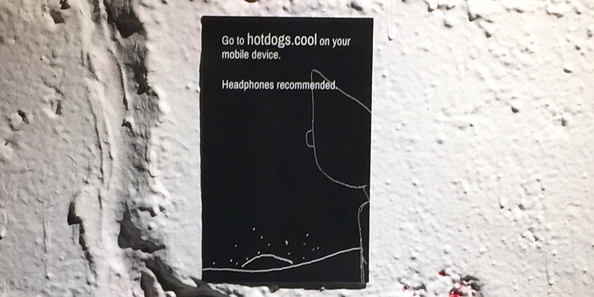
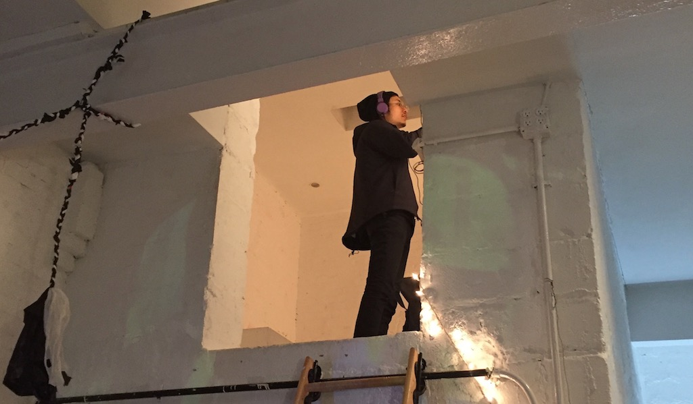
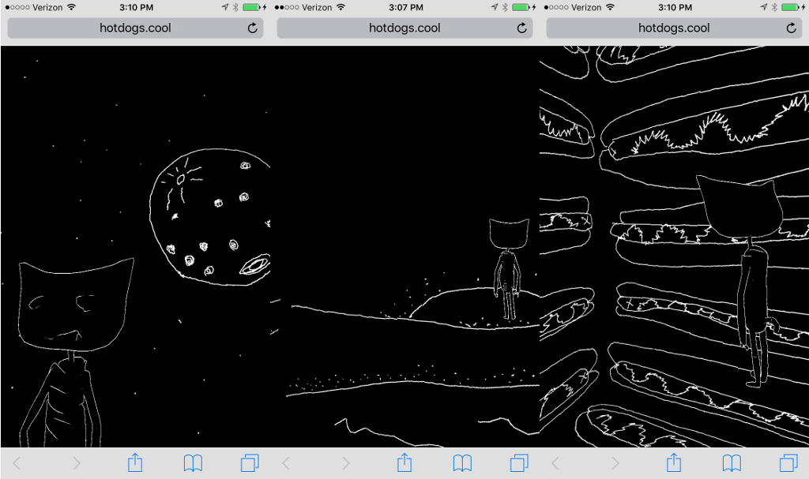

Hotdogs is part of a series in progress that I began developing as part of Crit in Fall 2017. "Hotdogs Part 1" was shown with other members of Crit at Ghost Gallery in Brooklyn. It was a really fun show. Crit is awesome, I recommend anyone to apply. Since the project was just a website, I made a little poster and installed that in the gallery.
Part 1 is available at the URL hotdogs.cool. It requires a mobile phone with a browser to view and headphones are very recommended.
I'm still working on Parts 2 & 3, I hope to release them during 2018, like, soon ish.
Update: Part 2, Trampoline, is available now at trampoline.cool.
  Another update: I made a WebVR version using the SteroEffect code from an old Google Cardboard example, it's up at vr.hotdogs.cool. I have to say, the VR experience is definitely worse than the original pseudo-VR version. The new WebVR stuff didn't work for what I built in three.js so this is a little cobbled together. I wanted to give this a try as a way to have some new VR project to potentially submit to stuff but I don't really like VR. Anyway, it's up and you can try it out if you have a Cardboard or Daydream or some other smart phone VR viewer.
The 2D animation in Hotdogs uses an animation tool called lines that I've been developing for a few years.
#screenshotsaturday mustard pic.twitter.com/ugWFkj5ity
— Owen Roberts (@owenribbit) December 3, 2017